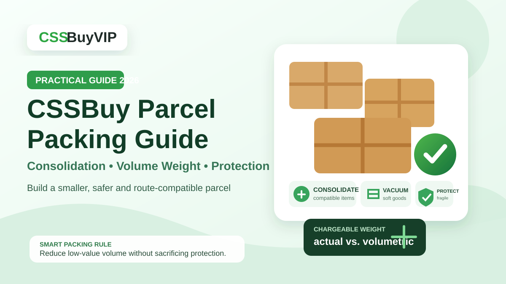

CSSBuy Parcel Packing Guide 2026: Consolidation, Volume Weight & Protection
A reverse purchase does not end when the item reaches the warehouse. For many buyers, the most expensive decisions happen after quality control, when several separate orders have to become one international parcel. CSSBuy’s current public service pages make this stage more flexible than a simple “ship everything” button: buyers can consolidate packages, request packaging removal, use vacuum packaging for compressible clothing, reinforce fragile goods, and choose insurance before international dispatch. The platform also states that the international shipping payment made at parcel submission is a deposit, while the final charge is based on the package size and weight verified later by the logistics company.
That means packing is not decoration. It is part of cost control, damage control and route planning.
The mistake is to optimize for the smallest box without asking what the box contains. A dense parcel of T-shirts, a pair of structured shoes, a glass accessory and an electronic item should not be treated as one homogeneous pile. The useful way to think about CSSBuy parcel submission is to classify every item by how it reacts to compression, impact and shipping restrictions, then build the parcel around those characteristics.
Packing starts before you click Submit Parcel
CSSBuy currently advertises package consolidation as a warehouse service. Separate packages can be combined into a larger shipment, which can remove duplicate seller packaging and may reduce repeated international base charges. But “combine everything” is not automatically the best strategy.
Divide warehouse items into four groups: compressible, rigid, fragile and restricted.
Compressible items include many T-shirts, hoodies, soft pants and fabric accessories. Rigid items include shoe boxes, structured bags and hard cases. Fragile items include glass, ceramics and delicate accessories. Restricted items include products whose batteries, liquids, powders, magnets, fragrance content, branding or other characteristics can reduce the shipping lines available to them.
This classification gives you a parcel plan before you start selecting services.
Consolidation should follow compatibility
CSSBuy’s Ship For Me page says package consolidation can combine multiple warehouse packages into one larger package. That can be useful, but consolidation should follow compatibility rather than convenience.
If several clothing orders can use the same route and protection level, combining them is logical. If one item requires heavy reinforcement or one restricted product removes the best route for everything else, splitting can be smarter.
Ask three questions before combining items: Can every item use the same shipping line? Can every item tolerate the same packing method? Does one item create a large increase in box size or protection requirements?
If the answer to any of these is no, compare a split-parcel plan.
Volume weight makes empty space expensive
CSSBuy’s current shipping estimator explains that most freight lines are charged using the greater of actual weight and volumetric weight, although the exact calculation and divisor depend on the route. It also notes that some China Post-related lines use actual weight instead.
This is why a light but bulky parcel can cost more than a smaller parcel that is physically heavier.
A large shoe box may weigh little, but it can create a much larger finished carton. Thick seller packaging, gift boxes and empty space can have the same effect. On a volumetric route, paying to move air becomes a real cost.
The goal is not “remove all packaging.” The better rule is “remove packaging that has low protective value and high volume.”
Packaging removal is a trade
CSSBuy’s Buy For Me workflow currently lists packaging removal among the additional services that can be requested at the international delivery stage.
Use it selectively.
For a folded cotton T-shirt, a bulky retail bag or unnecessary seller carton may add little protection. Removing it can make sense. For collectible packaging, a structured handbag, electronics with fitted inserts or shoes where the box matters to you, removal can reduce protection or destroy part of the product experience.
Before requesting removal, decide whether the original packaging is disposable, protective or valuable. A useful remark is specific: “Remove exterior seller courier bags and nonessential cardboard, but keep the product box for item X.”
Vacuum packaging works best on soft goods
CSSBuy’s current Ship For Me page says it offers vacuum packaging because express delivery can be calculated by volume weight, and specifically notes that parcels containing many clothes can benefit from reduced volume.
The service is most useful for soft garments that can recover their shape after compression.
It is less suitable for items with rigid panels, foam structure, molded components or materials that can crease permanently. A sweatshirt and a structured cap should not receive the same instruction. Group vacuum candidates together and keep shape-sensitive items outside the compression request.
The correct question is not “Can this fit in a vacuum bag?” It is “Will compression change the item in a way I care about?”
Reinforcement should solve a specific risk
CSSBuy also lists reinforced packaging for fragile goods and says bubble material can be used to reduce damage risk.
Extra protection adds weight and can add volume, so use it where it solves a defined problem. For fragile goods, the risk is impact. For a structured bag, the risk may be crushing. For clothing, heavy reinforcement often adds little value.
Describe the risk, not just the desired adjective. “Protect the glass item from impact and reinforce the outer carton” is more useful than “pack well.”
Do not use packing as a customs workaround
CSSBuy’s forwarding page mentions label cutting and invoice disposal as services that can be requested by note. Treat those as packaging or presentation choices, not as a method to hide the nature or value of goods.
Customs rules belong to the destination country, and shipments can be inspected regardless of which retail packaging is removed. Do not request false descriptions, false values or misleading declarations.
A packing decision should improve protection or reduce unnecessary physical volume. It should not depend on concealing what is inside the parcel.
Check route eligibility before optimizing the carton
CSSBuy’s current estimator lists route restrictions for categories such as batteries, liquids, powders, cosmetics, perfumes, magnetic products, watches, food and some branded goods. Exact restrictions vary by shipping line.
Imagine eight ordinary clothing items and one battery-powered accessory. If the accessory removes several attractive lines from consideration, combining all nine items can create a worse parcel. Sending the accessory separately through a compatible route may preserve more options for the clothing parcel.
Run the estimator with the real destination and realistic item characteristics before finalizing parcel groups. Route compatibility comes before box optimization.
Treat the shipping payment as a working estimate
CSSBuy’s Buy For Me instructions say the international shipping deposit is calculated from estimated product weight, the selected shipping method and the destination. The platform then states that the final fee is calculated after the package size and weight are verified, with the difference reconciled to the CSSBuy account after shipment.
The number shown before packing is therefore not a final measurement. Packaging removal, vacuum compression, reinforcement, carton size and measured weight can change the result.
Use the deposit as a planning number, not a promise. When comparing parcel strategies, focus on variables you can control: route, compatibility, unnecessary volume and protection level.
Use a two-pass packing note
A practical parcel remark separates reduction from protection.
Pass one is volume reduction: remove disposable seller packaging, vacuum-pack only compressible clothing and avoid unnecessary outer material.
Pass two is protection: keep required product boxes, support structured items, cushion fragile goods and reinforce the outer carton where needed.
For example: “Remove external courier bags and unnecessary cardboard from clothing. Vacuum-pack the T-shirts and hoodies only. Keep the shoe box for order A. Do not compress the structured bag. Cushion the glass accessory and reinforce the outer carton.”
That note is short, item-specific and operational.
A repeatable CSSBuy parcel workflow
Use this sequence when your reverse-purchased items are ready to ship.
First, finish QC and return decisions. Do not pack an item that still has an unresolved warehouse problem.
Second, classify items as compressible, rigid, fragile or restricted.
Third, check shipping-line eligibility for the destination and product characteristics.
Fourth, group only route-compatible items.
Fifth, identify packaging with low protective value and high volume.
Sixth, assign vacuum packaging only to items that can tolerate compression.
Seventh, add reinforcement only where the likely damage mode justifies it.
Eighth, submit a concise remark that separates volume reduction from protection.
Ninth, treat the international payment as a deposit until the finished parcel is measured and the final charge is reconciled.
This turns parcel submission from a last-minute checkout into a controlled logistics decision.
Frequently Asked Questions
Does CSSBuy combine orders from different sellers into one parcel?
CSSBuy lists package consolidation as a warehouse service. Multiple warehouse packages can be combined, but route compatibility, protection needs and parcel dimensions should still be considered before combining everything.
Can CSSBuy remove original packaging before international shipping?
CSSBuy’s current Buy For Me instructions list packaging removal as an additional service. Use it selectively and keep packaging that provides protection or that you personally value.
Is vacuum packaging always cheaper?
No. CSSBuy presents vacuum packaging as a way to reduce volume for suitable goods such as clothing. The benefit depends on the route, final dimensions and whether the items can safely tolerate compression.
Does CSSBuy use actual weight or volumetric weight?
It depends on the line. CSSBuy’s estimator says most routes use the greater of actual and volumetric weight, while some China Post-related services use actual weight. Check the live route details.
Why can the final shipping charge differ from the amount paid at submission?
CSSBuy describes the initial international shipping payment as a deposit based on estimated weight, route and destination. The final amount is determined after the finished parcel is measured, and the difference is reconciled through the CSSBuy account.
Can one restricted item affect the shipping options for the whole parcel?
Yes. If a line does not accept a certain product characteristic, including that item can make the entire parcel ineligible for that line. Splitting the restricted item can preserve more route choices for the rest.
What should I write in the parcel remark?
Write item-specific actions. State what packaging can be removed, which garments can be vacuum-packed, what boxes must be kept, which items must not be compressed and where reinforcement is required.
What is the main rule for saving money on CSSBuy packing?
Do not chase the smallest possible box. Reduce low-value volume while preserving the protection each item needs, then choose a route that matches the final parcel characteristics.